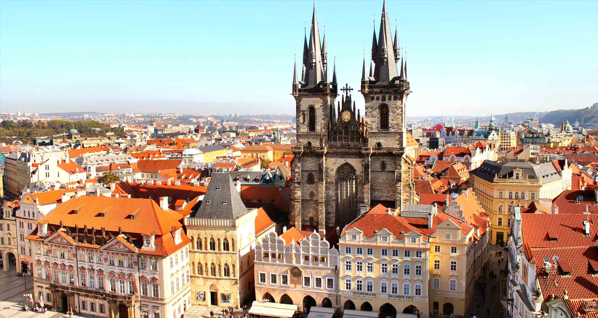

Crie uma página web que demonstre a utilização de seletores CSS em elementos HTML. Deve conter seletores para “id” e “class” bem como demonstrar o uso de seletores em atributos, pseudo-classes e pseudo-elementos bem como o uso de “combinators”. Mostre o código no Github ou JSFiddle com o resultado obtido.
Staroměstské náměstí

Praça da Cidade Velha é uma praça histórica no bairro da Cidade Velha de Praga, capital da República Tcheca. Está localizado entre a Praça Venceslau e a Ponte Carlos.